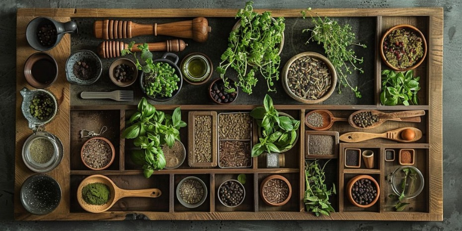

TINTURAS MADRE
Descubriendo el conocimiento ancestral gota a gota
Las tinturas madre, una de las formas más antiguas y efectivas de medicina herbal, han sido utilizadas por culturas de todo el mundo durante siglos. Desde las antiguas civilizaciones egipcias y griegas hasta las tribus indígenas de América, el conocimiento sobre las propiedades curativas de las plantas se ha transmitido de generación en generación.
Estas preparaciones concentradas, elaboradas a partir de la maceración de plantas medicinales en alcohol, capturan la esencia y el poder curativo de la planta en su forma más pura.
¿Qué son las tinturas madre y para qué sirven?
Las tinturas madre son extractos líquidos concentrados de plantas medicinales. Se preparan macerando la planta fresca o seca en una solución de alcohol y agua, lo que permite extraer los principios activos de la planta.
Aplicaciones y beneficios:
- Medicina natural: Las tinturas madre se utilizan para tratar una amplia variedad de dolencias, desde problemas digestivos y nerviosos hasta afecciones de la piel y el sistema inmunológico.
- Fácil absorción: Al ser líquidas, las tinturas madre se absorben rápidamente en el organismo, lo que permite que los principios activos de las plantas actúen de manera más eficiente
- Dosis personalizable: La dosis de las tinturas madre se puede ajustar fácilmente según las necesidades individuales y la gravedad de la afección.
- Conservación: Las tinturas madre bien conservadas pueden durar varios años sin perder sus propiedades curativas.
Elaboración de una tintura madre casera: un proceso sencillo y efectivo
Ingredientes:
- Planta medicinal fresca o seca (la elección dependerá de la planta y de la disponibilidad)
- Alcohol de 40° (puedes usar vodka o aguardiente de buena calidad)
- Frasco de vidrio oscuro con tapa hermética
- Etiqueta
Preparaciòn
- Preparación de la planta: Si utilizas planta fresca, lávala bien y córtala en trozos pequeños. Si utilizas planta seca, puedes triturarla ligeramente.
- Maceración Introduce la planta en el frasco de vidrio oscuro y cubre con el alcohol. La proporción de planta y alcohol dependerá de la planta y de la concentración deseada. Una proporción común es 1:5 (1 parte de planta por 5 partes de alcohol).
- Reposo: Cierra bien el frasco y agita suavemente. Deja reposar la mezcla en un lugar fresco y oscuro durante 2 a 4 semanas, agitando el frasco suavemente una vez al día.
- Filtrado: Pasado el tiempo de maceración, filtra la mezcla con un colador de tela o filtro de café. Exprime bien la planta para extraer todo el líquido.
- Envasado y etiquetado: Guarda la tintura madre en un frasco de vidrio oscuro con tapa hermética. Etiqueta el frasco con el nombre de la planta, la fecha de elaboración y la concentración (si la conoces).
Beneficios a largo plazo de las tinturas madre como medicina alternativa
Las tinturas madre, utilizadas de manera responsable y bajo la guía experta de un profesional de la salud, se erigen como una herramienta invaluable en la búsqueda de una salud óptima y un bienestar duradero. Su potencial trasciende el tratamiento de dolencias específicas, abarcando un enfoque holístico que nutre el cuerpo y el espíritu.
Desde tiempos inmemoriales, las tinturas madre han sido un recurso preciado en diversas culturas, transmitiendo de generación en generación el conocimiento sobre las propiedades curativas de las plantas. Este legado ancestral nos brinda hoy una alternativa natural y efectiva para abordar una amplia gama de desequilibrios de salud, desde dolencias comunes hasta afecciones crónicas.
Más allá del tratamiento: una medicina preventiva
Las tinturas madre no solo se limitan a aliviar síntomas; su acción profunda y revitalizante fortalece el sistema inmunológico, el pilar de nuestra salud. Al promover el equilibrio natural del organismo, estas preparaciones herbales nos empoderan para prevenir enfermedades y mantenernos saludables a largo plazo
Una de las mayores ventajas radica en su versatilidad. La dosis y la combinación de plantas se pueden adaptar a las necesidades individuales, permitiendo un tratamiento personalizado y efectivo.
El uso de tinturas madre nos invita a reconectar con la sabiduría ancestral de las plantas, estableciendo un vínculo íntimo con la naturaleza y sus dones curativos. Esta conexión trasciende lo físico, nutriendo nuestra salud emocional y espiritual.
Advertencia
Si bien las tinturas madre son generalmente seguras, es importante utilizarlas con precaución y bajo la supervisión de un profesional de la salud, especialmente si estás embarazada, amamantando, tomando medicamentos o tienes alguna condición médica preexistente.
Fuentes:
"Herbal Medicines: A Guide for Healthcare Professionals" de Linda Anne Chiej
¡Obtene tu copia!"The Complete Herbal Handbook for Farm and Stable" de Juliette de Bairacli Levy
¡Obtene tu copia!